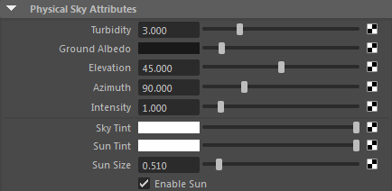

| 延伸阅读 |
|---|
| 有关完整的着色器文档，请参见《Arnold 用户手册》中的物理天空。 |

此着色器可实现各类 Hosek-Wilkie 天空辐射模型，包括直接太阳辐射函数。您可以将其插入到环境中，或插入到 skydome_light 的颜色输入（得益于高效的重要性采样，向太阳附近的明亮区域发送更多光线），也可以将其直接添加为环境着色器。当前，此着色器对 GI 漫反射和镜面反射光线不可见。要将其用作光源，您必须将其连接至 *skydome_light*，并设置足够的分辨率来捕捉较小的太阳圆盘。
建议不要将 physical_sky 与天空着色器结合使用。您应该将 physical_sky 连接到 skydome_light 或直接连接到环境。背景*已被弃用，将在未来版本中移除。您应该将 *physical_sky 连接到 skydome_light。